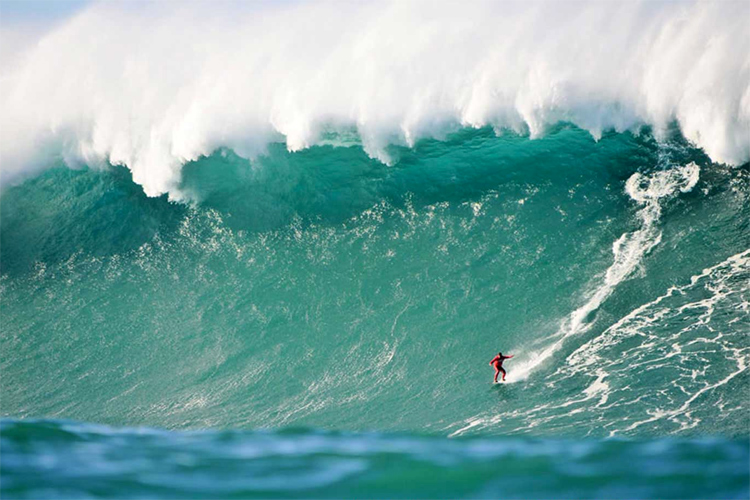

Big wave surfing

What is big wave surfing?
Big wave surfing is a discipline within surfing in which experienced surfers paddle into, or are towed into
, waves which are at least 20 feet (6.2 m) high, on surf boards known as "guns" or towboards
.Sizes of the board needed to successfully surf these waves vary by the size of the
wave as well as the technique the surfer uses to reach the wave. A larger, longer board
allows a rider to paddle fast enough to catch the wave and has the advantage of being more
stable, but it also limits maneuverability and surfing speed.
The biggest waves in the world
- Nazaré, Portugal
- Tahiti, French Polynesia
- Tasmania, Australia
- Half Moon Bay, California
- La Côte Basque, France
The biggest waves in the world

In 1992, big wave surfers such as Laird Hamilton and Darrick Doerner
introduced a cross
over sport called tow-in surfing.
[4] While many riders still participate in both sports, they
remain very distinct activities. This type of surfing involves being towed into massive waves
by jet ski, allowing for the speed needed to successfully ride.
Tow in surfing also revolutionized board size, allowing surfers to trade in their unwieldy
12 ft. boards in favor of light, 7 ft boards that allowed for more speed and easier
maneuverability in waves over 30 ft. By the end of the 1990s, tow in surfing allowed
surfers to ride waves exceeding 50 ft.[4]